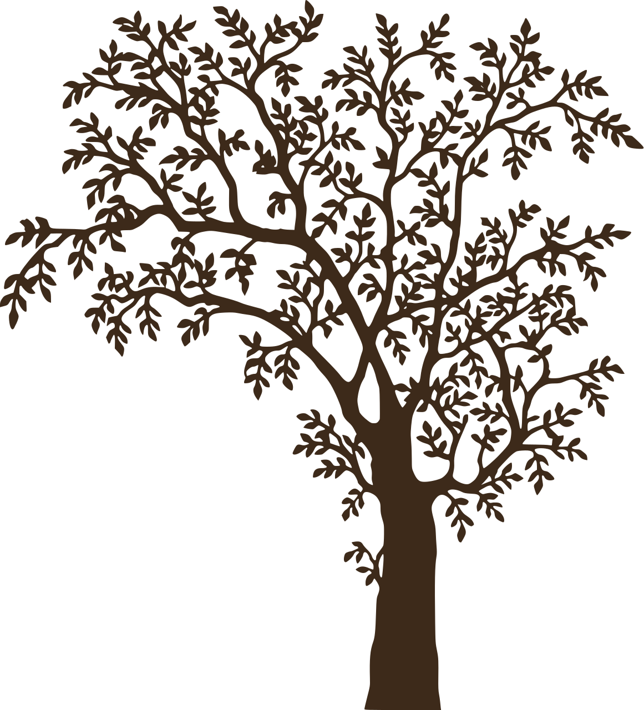

tap to grow.

Autumn is a nice season, ain't it?
It just teaches us how to let go. The leaves fall like old versions of us, so the ground can make room for what's next to grow.
light the way.
open it.
drag the record in.
You got voicemail
scroll down
— with love, Umar